Fundación CIDEMAR
Cultura
oceánica
Un mapa de las fundaciones, ONGs y redes que trabajan, educan y difunden por el mar chileno — de norte a sur.
Explorar el mapaSobre nosotros
Somos Fundación CIDEMAR
Trabajamos en la divulgación de las ciencias del mar, la educación ambiental y la gestión de zonas costeras. Este sitio nació con un propósito simple: reunir, en un mismo lugar, a las personas y organizaciones que ya están construyendo cultura oceánica en Chile — para que sean más fáciles de encontrar, y más fáciles de conectar entre sí.
Es un directorio en crecimiento. Si conoces una organización que debería estar aquí, o eres parte de una, escríbenos.
contacto@cidemar.org- Organizaciones
- —
- Regiones costeras
- —
¿Cómo te relacionas con el océano?
¡Te invitamos a navegar en el portal de nuestro grupo de trabajo y sumergirte en el conocimiento que nos permitirá identificar la relación que tienes con el océano y la que él tiene contigo!
Sigue este portal de amantes del océano que promueven el desarrollo de una cultura oceánica en Chile, fomentan la integración y la participación activa de las personas en la preservación, promoción y difusión del conocimiento y la conciencia sobre nuestro océano y su importancia para el bienestar de la población.
Conoce los 7 principios de la Cultura Oceánica
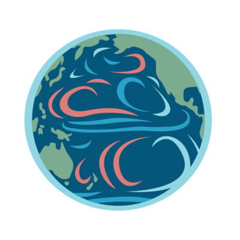
1 La Tierra tiene un único gran océano con múltiples características
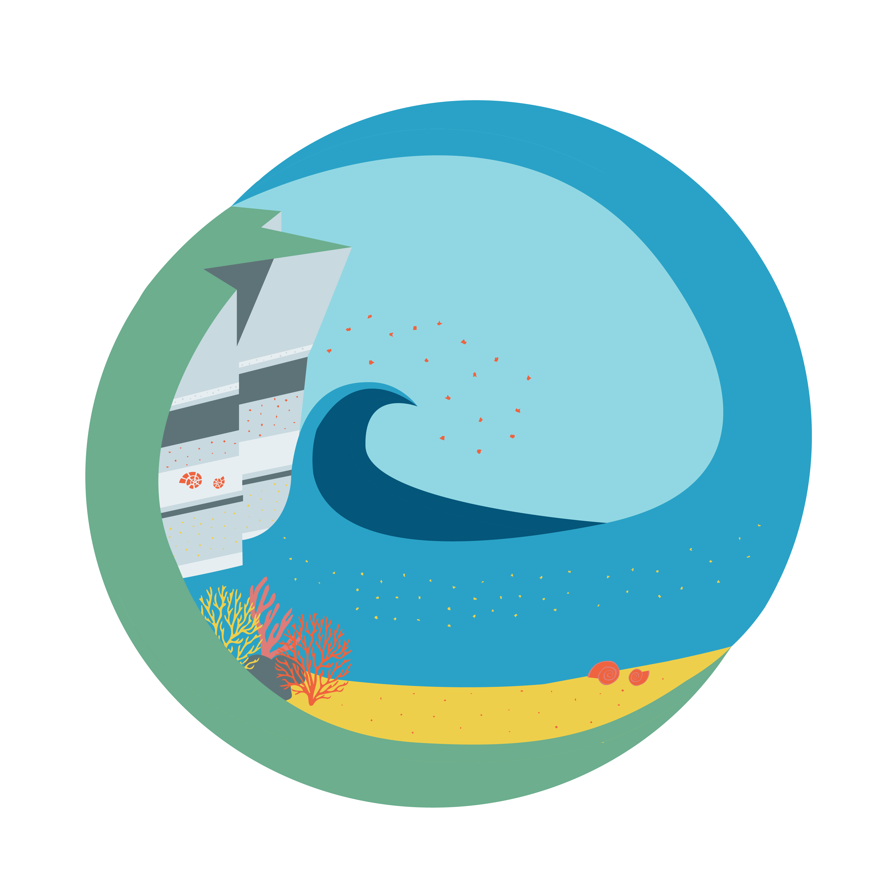
2 El océano y la vida que éste alberga moldean las características de la Tierra
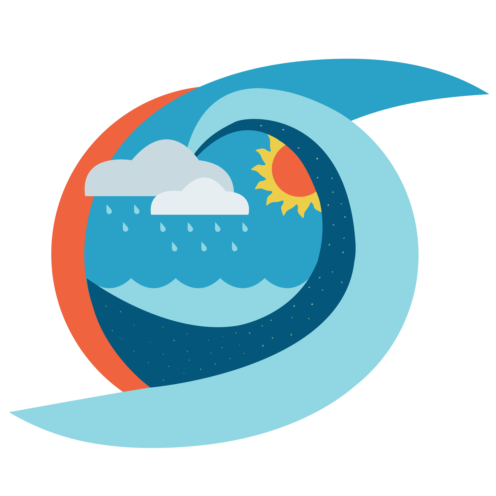
3 El océano ejerce una gran influencia sobre las condiciones climáticas y meteorológicas
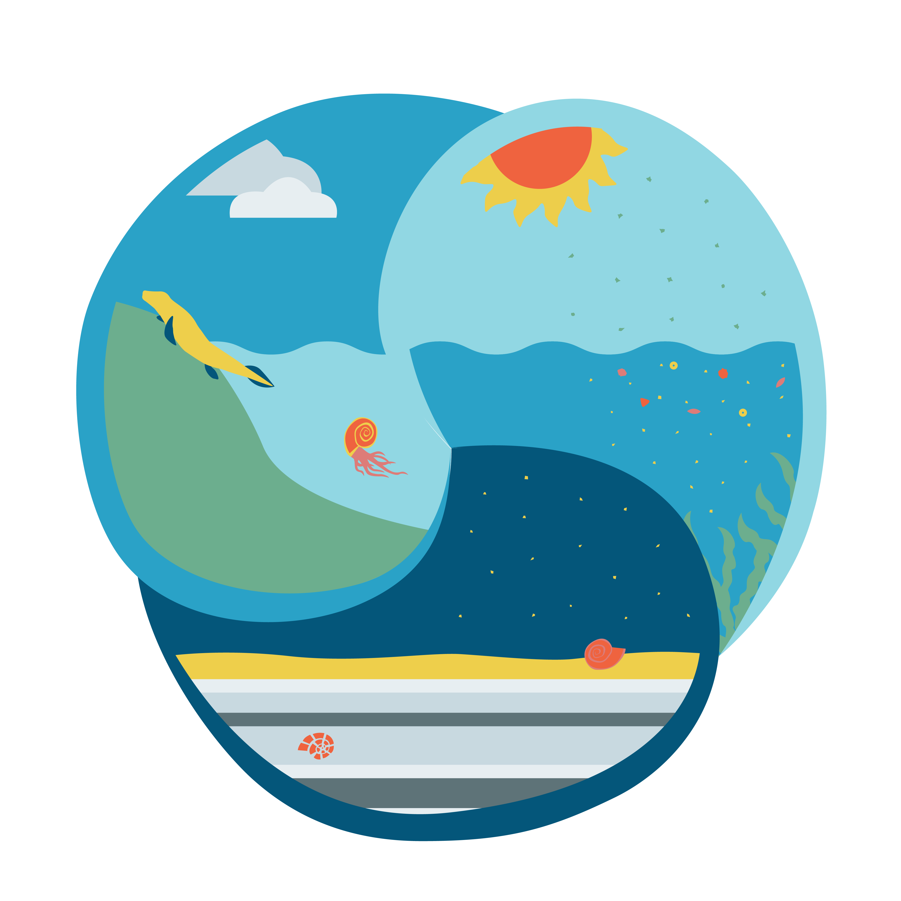
4 El océano hace posible que la Tierra sea habitable
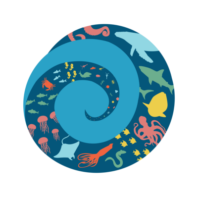
5 El océano sustenta una gran diversidad de vida y de ecosistemas
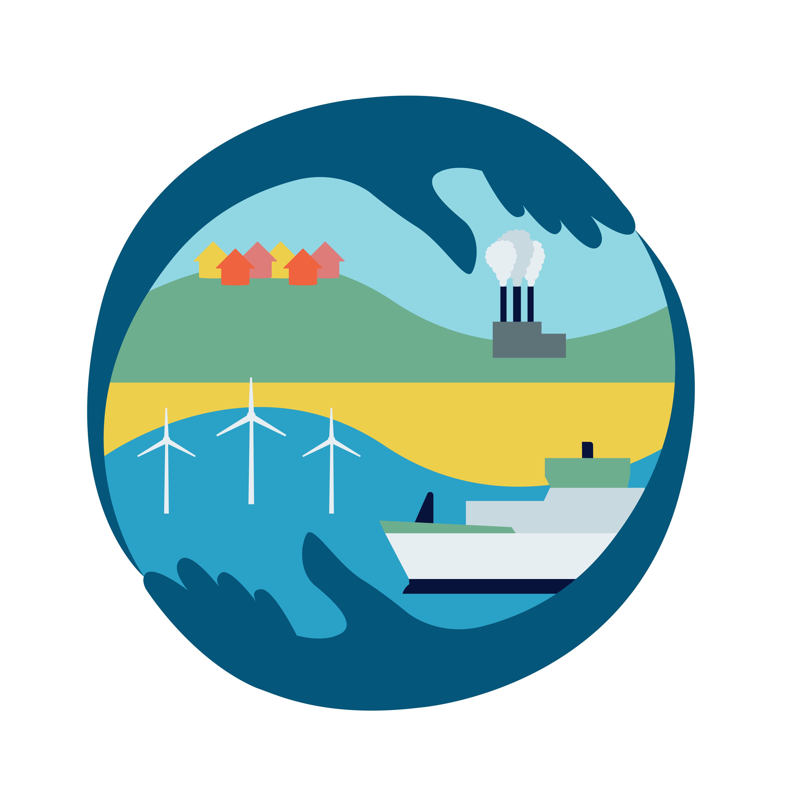
6 El océano y los seres humanos están intrínsecamente conectados
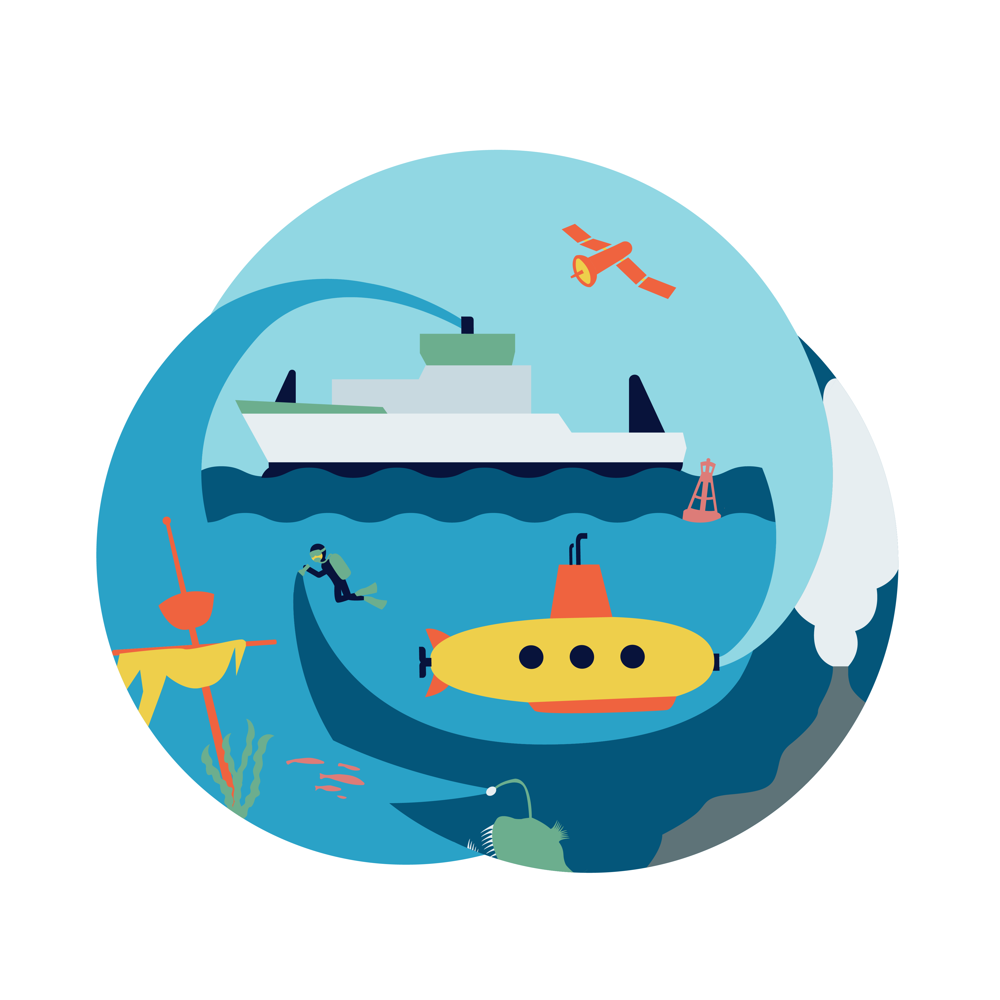
7 La mayor parte del océano permanece inexplorado
Noticias
Líneas de acción del GT COCEAN
Educación
Espacio de aprendizaje sobre Cultura Oceánica en Chile, con la entrega de cuatro cursos gratuitos y la difusión de las diferentes ofertas educativas existentes a nivel nacional.
Integración
Integración de las acciones de Cultura Oceánica en Chile generadas por diferentes instituciones, organizaciones, centros educacionales, emprendedores, alianzas y mucho más.
Incidencia
Integración de las acciones de Cultura Oceánica en Chile generadas por diferentes instituciones, organizaciones, centros educacionales, emprendedores, alianzas y mucho más.
¿Por qué nace el Grupo de Trabajo?
La UNESCO a través de su Comisión Oceanográfica Intergubernamental (COI), se encuentra en plena ejecución de la Década de las Ciencias Oceánicas para el Desarrollo Sostenible 2021-2030. Uno de los desafíos planteados por el Plan de Implementación de la Década es que cada país desarrolle su propia Estrategia de Cultura Oceánica, trazándose como meta al 2025 que cada uno de los 195 Estados Miembros de la UNESCO incorporen la educación sobre el océano en sus planes de estudio. Para esto, el Comité Oceanográfico Nacional (CONA), en el marco del Comité Nacional de la Década, aprobó los antecedentes, fundamentos y acciones específicas del Grupo de Trabajo de Cultura Oceánica, con el propósito de coordinar e implementar los desafíos y metas planteadas por la UNESCO/COI y la Política Oceánica Nacional.
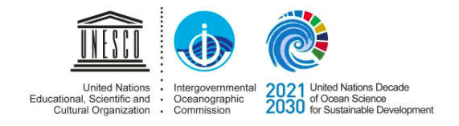
Miembros
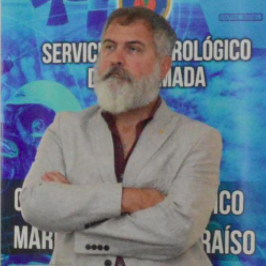
Alejandro
Carlos
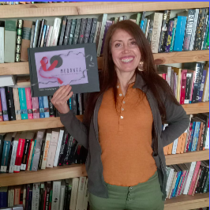
Ghislaine
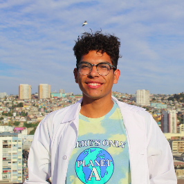
Luis

Maria Jose
Pilar
El mapa
Encuentra organizaciones
Toca un punto en el mapa para ver de qué se trata cada organización, o filtra por tipo usando las categorías de abajo.
Cargando organizaciones…